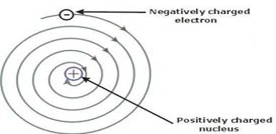
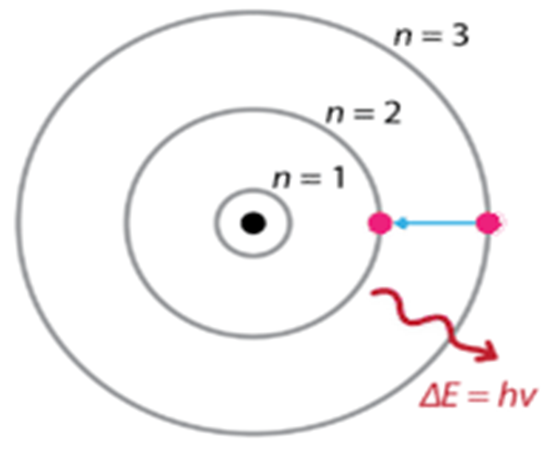

১. রাদারফোর্ডের আলফা বিচ্ছুরন পরীক্ষা ও নিউক্লিয়াস আবিষ্কার :
১৯১১ খ্রিস্টাব্দে ব্রিটিশ বিজ্ঞানী রাদারফোর্ড তৈজস্ক্রিয় উৎস হতে বিকিরিত দ্রুতগামী α কণিকাকে একটি অতি পাতলা স্বর্ণ পাতের উপর বিক্ষেপন করে লক্ষ করেন যে- (১) অধিকাংশ α কণিকা স্বর্ণপাত ভেদ করে চলে যায়।
(২) অল্প সংখ্যক α কণিকা বিকর্ষিত হয়ে বেকে দিক পরিবর্তন করে।
(৩) অত্যন্ত অল্প সংখ্যক α কণিকা (প্রায় 20,000 ভাগের 1 ভাগ) পুরোপুরি বেকে ফিরে আসে।

চিত্র: রাদারফোর্ডের আলফা কনা বিচ্ছুরন পরীক্ষা
পর্যবেক্ষণ : তিনি লক্ষ করেন যে,
(১) পরমাণুর অভ্যন্তরে অধিকাংশ স্থান ফাঁকা।
(২) α কণিকা যে অঞ্চল হতে বেঁকে দিক পরিবর্তন করে তার পার্শ্ববর্তী অঞ্চলে ধনাত্মক আধান যুক্ত বস্তু বিদ্যমান। রাদারফোর্ড এ ধনাত্মক বস্তুর নাম দেন নিউক্লিয়াস। তিনি আরও বলেন, নিউক্লিয়াসে বস্তুর সমস্ত ভর পুঞ্জিভূত থাকে।
(৩) পরমাণুর মোট আয়তনের তুলনায় নিউক্লিয়াসের আয়তন অত্যন্ত ক্ষুদ্র এবং যা হাইড্রোজেন পরমানুর আয়তনের তুলনায় প্রায় ১ লক্ষ ভাগ ছোট।
২. রাদারফোর্ডের পরমানু মডেল :
১৯১১ সালে রাদারফোর্ড তাঁর বিখ্যাত α কণা বিচ্ছুরণ পরীক্ষা দ্বারা পরমাণুর নিউক্লিয়াস আবিষ্কারের মাধ্যমেই একটি পরমাণুর নিউক্লিয় মডেল প্রস্তাব করেন। মডেলটি নিম্নরূপ :(১) পরমাণুর যে অংশটি ধনাত্মক আধানবিশিষ্ট ও ভারী তা কেন্দ্রে অবস্থান করে। এটি নিউক্লিয়াস নামে পরিচিত। নিউক্লিয়াসেই একটি পরমানুর প্রায় সমস্ত ভর কেন্দ্রীভূত থাকে।
(২) পরমাণু সামগ্রিকভাবে তড়িৎ-নিরপেক্ষ। নিউক্লিয়াসে যতগুলো ধনাত্মক কণা (প্রোটন) বিদ্যমান, ঠিক ততগুলো ঋনাত্মক কণা (ইলেকট্রন) এর চারপাশে অবস্থান করে।

(৩) পরমাণুর এই মডেল সৌরজগতের সাথে তুলনীয়। সূর্যকে কেন্দ্র করে নিজ নিজ কক্ষপথে গ্রহগুলো যেভাবে ঘুরে, ঠিক একইভাবে ইলেকট্রনগুলো নিউক্লিয়াসকে কেন্দ্র করে নিজ নিজ কক্ষপথে তীব্র বেগে ঘুরছে। ফলে নিউক্লিয়াস এবং ইলেকট্রনের মধ্যকার কেন্দ্রমুখী বল এবং ইলেকট্রনের কেন্দ্রবহির্মুখী বল পরস্পর সমান ও বিপরীতমুখী হয়। তাই পরমানু সুস্থিত হয়।
(৪) পরমানুর আকার বা আয়তনের তুলনায় নিউক্লিয়াস অত্যন্ত ক্ষুদ্র।
৩. রাদারফোর্ডের পরমাণু মডেলের সফলতা :
(১) রাদারফোর্ডের পরমাণু মডেল যথেষ্ট সফলভাবে α কণিকা পরীক্ষাকে ব্যাখ্যা করে।(২) পরমানুতে নিউক্লিয়াসের উপস্থিতির সঠিক ধারণা দেয়।
(৩) পরমানুর চার্জ নিরপেক্ষতা সম্পর্কে নিশ্চিত ব্যাখ্যা দেয়।
৪. রাদারফোর্ডের পরমাণু মডেলের সীমাবদ্ধতা বা ত্রুটি :
এ মডেলের ত্রুটিগুলো নিম্নরূপ - (১) এ মডেলকে সোলার সিস্টেমের (Solar system) সাথে তুলনা করা হয়েছে। সৌরমন্ডলের গ্রহগুলো তড়িৎ নিরপেক্ষ, কিন্তু পরমানুতে ধনাত্মক আধানযুক্ত প্রোটন ও ঋনাত্মক আধানযুক্ত ইলেকট্রন বিদ্যমান এবং এদের মধ্যে আকর্ষণ ও বিকর্ষন আছে। (২) ম্যাক্সওয়েলের তড়িৎ-চুম্বকীয় তত্ত অনুসারে কোন আধানযুক্ত কণা যখন বৃত্তাকার পথে পরিভ্রমণ করে তখন অনবরত শক্তি বিকিরণ করে। নিরবচ্ছিন্নভাবে শক্তি হ্রাসের ফলে এরূপে ভ্রমণরত ইলেকট্রনের গতিশক্তি কমে যাবে এবং তার সর্পিলাকারের ঘূর্ণন পথের ব্যাসার্ধ কমতে কমতে এক সময়ে তা নিউক্লিয়াসে পতিত হবে। ফলে এ মডেলের যৌক্তিকতা প্রশ্নবিদ্ধ হয়।
(৩) রাদারফোর্ডের পরমানু মডেলে ইলেকট্রনের কক্ষপথের আকার ও আকৃতি সম্পর্কে কোন ধারণা দেওয়া হয়নি। (৪) বহু-ইলেকট্রন বিশিষ্ট পরমাণুতে ইলেকট্রনগুলো নিউক্লিয়াসকে কীভাবে পরিক্রমণ করে সে সম্পর্কে কোন উল্লেখ এ মডেলে নেই।
৫. বোরের পরমানু মডেল :
পরমাণুর গঠন ও একইসাথে পারমাণবিক বর্ণালি ব্যাখ্যার জন্য নীলস বোর ১৯১৩ খ্রিস্টাব্দে তার বিখ্যাত পরমানু মডেল প্রকাশ করেন। বোর পরমাণু মডেলের স্বীকার্যগুলো নিম্নরূপ :(১) ইলেকট্রনের স্থির কক্ষপথ বা শক্তিস্তরের ধারণা সম্পর্কীয় স্বীকার্য
(২) ইলেকট্রনের কৌণিক ভরবেগ সম্পর্কীয় স্বীকার্য
(৩) শক্তির শোষণ বা বিকিরণ এবং বর্ণালি সৃষ্টি সম্পর্কীয় স্বীকার্য
প্রথম স্বীকার্য (ইলেকট্রনের স্থির কক্ষপথ বা শক্তিস্তরের ধারণা সম্পর্কীয়) :
পরমাণুর নিউক্লিয়াসের বাইরে নিউক্লিয়াসকে কেন্দ্র করে কতিপয় নির্দিষ্ট শক্তির বৃত্তাকার কক্ষপথ আছে। এই কক্ষপথে ইলেকট্রনগুলো সর্বদাই নিউক্লিয়াসের চারদিকে আবর্তন করে । কক্ষপথগুলো নিউক্লিয়াস থেকে ভিন্ন ভিন্ন দূরত্বে অবস্থিত। ইলেকট্রনগুলো এসব বৃত্তাকার কক্ষপথে আবর্তনকালে যতক্ষন তারা একই কক্ষপথে থাকবে ততক্ষন তারা কোন শক্তি শোষণ বা বিকিরণ করবে না। এই কক্ষপথগুলো স্থির কক্ষপথ বা শক্তিস্তর নামে পরিচিত।

চিত্র : বোর এটমিক মডেল
দ্বিতীয় স্বীকার্য (ইলেকট্রনের কৌণিক ভরবেগ সম্পর্কীয়) :
স্থির কক্ষপথে আবর্তনরত ইলেকট্রনের কৌণিক ভরবেগ h/2π এর অখন্ড বা পূর্ণ সংখ্যার গুণিতক হয়। অর্থাৎ
ইলেকট্রনের কৌণিক ভরবেগ, mvr = nh/2π
যেখানে m = ইলেকট্রনের ভর
v = ইলেকট্রনের রৈখিক বেগ
r = কক্ষপথের ব্যাসার্ধ
n = অখন্ড সংখ্যা = 1,2,3,............
h = প্লাংকের ধ্রুবক = 6.626 x 10-34Js
তৃতীয় স্বীকার্য (শক্তির শোষণ বা বিকিরণ এবং বর্ণালি সৃষ্টি সম্পকীয়) :
যখন কোন ইলেকট্রন একটি কক্ষপথ বা শক্তি স্তর হতে অন্য কক্ষপথ বা শক্তিস্তরে লাফ দেয় তখন ইলেকট্রন দ্বারা নির্দিষ্ট পরিমাণ শক্তি শোষিত বা বিকিরিত হয়। ইলেকট্রন যদি নিম্ন শক্তি স্তর থেকে উচ্চতর শক্তি স্তরে লাফ দেয় বা উন্নীত হয় তখন ইলেকট্রন দ্বারা শক্তি শোষিত হয়। আবার যখন ইলেকট্রন উচ্চ শক্তিস্তর থেকে নিম্ন শক্তিস্তরে লাফ দেয় বা নেমে আসে তখন ইলেকট্রন শক্তি বিকিরণ করে।
যদি নিম্নতর ও উচ্চতর শক্তি স্তরের শক্তি যথাক্রমে n1 ও n2 হয় তবে ইলেকট্রন দ্বারা বিকিরিত বা শোষিত শক্তি ∆n = n2 - n1 -------- (১) , প্লাংকের সূত্রানুযায়ী, ∆n = hυ , যেখানে h = প্লাংকের ধ্রুবক এবং υ = কম্পাংক
৬. বোর পরমাণু মডেলের সীমাবদ্ধতা :
বোর পরমাণু মডেল আধুনিক পরমাণু মডেল হলেও এটিতে কিছু ত্রুটি বিদ্যমান। এ ত্রুটিগুলি নিম্নরূপ:(১) বোর পরমাণু মডেল হাইড্রোজেন পরমাণুর বর্ণালি ব্যাখ্যা করতে পারলেও এর সাহায্যে বহু ইলেকট্রনবিশিষ্ট পরমাণুর বর্ণালি ব্যাখ্যা করা যায় না।
(২) বোর পরমাণু মডেল অনুসারে এক শক্তি স্তর হতে অপর শক্তি স্তরে ইলেকট্রনের স্থানান্তর ঘটলে বর্ণালিতে একটি করে রেখা সৃষ্টি হওয়া উচিত। কিন্তু উচ্চ শক্তির বর্ণালি-বীক্ষণের সাহায্যে বিশ্লেষণ করে দেখা গেছে যে, প্রতিটি রেখার স্থানে কয়েকটি রেখা অবস্থান করে। এসব সূক্ষ রেখার উৎপত্তি কিভাবে হয়েছে তা বোর মডেল ব্যাখ্যা করতে পারে না।
(৩) এ তত্ত প্রয়োগ করে জীম্যান ও স্টার্ক ফলাফলের ব্যাখ্যা করা যায় না।
(৪) বোর পরমাণু মডেল অনুসারে ইলেকট্রনের শুধুমাত্র কণা ধর্ম প্রদর্শন করে। কিন্তু দ্য-ব্রগলি প্রমান করেছেন, ইলেকট্রনের কণা ও তরঙ্গ উভয় ধর্ম রয়েছে।
৭. বোর পরমাণু মডেল ও রাদারফোর্ডের পরমাণু মডেলের তুলনা :
| বোর পরমাণু মডেল | রাদারফোর্ডের পরমাণু মডেল |
| (১) প্লাংকের কোয়ান্টাম তত্ত্বের ওপর ভিত্তি করে এ মডেল প্রতিষ্ঠিত। | (১) ম্যাক্সওয়েলের তড়িৎ-চুম্বকীয় তত্ত্বের ওপর ভিত্তি করে এ মডেল প্রতিষ্ঠিত। |
| (২) ইলেকট্রন নির্দিষ্ট কক্ষপথে পরিভ্রমণকালে শক্তির শোষণ বা বিকিরণ ঘটে না। | (২) ইলেকট্রন নির্দিষ্ট কক্ষপথে পরিভ্রমণকালে শক্তির বিকিরণ ঘটে। |
| (৩) এ মডেল শোষিত বা বিকিরিত শক্তির ব্যাখ্যা দিতে পারে। | (৩) এ মডেল শোষিত বা বিকিরিত শক্তির ব্যাখ্যা দিতে পারে না। |
| (৪) এ মডেল দ্বারা ইলেকট্রনের কক্ষপথের আকার ও আকৃতি সম্পর্কে ব্যাখ্যা করা যায়। | (৪) এ মডেল দ্বারা ইলেকট্রনের কক্ষপথের আকার ও আকৃতি সম্পর্কে ব্যাখ্যা করা যায় না। |
| (৫) হাইড্রোজেন বর্ণালি রেখার উৎপত্তি জানা যায় এবং এর তরঙ্গ দৈর্ঘ্য হিসাব করা যায়। | (৫) হাইড্রোজেন বর্ণালি রেখার উৎপত্তি জানা যায় না এবং এর তরঙ্গ দৈর্ঘ্য হিসাব করা যায় না। |
| (৬) এ মডেল অনুসারে পরমাণুর স্থায়িত্ব আছে। | (৬) এ মডেল অনুসারে পরমাণুর স্থায়িত্ব নেই। |